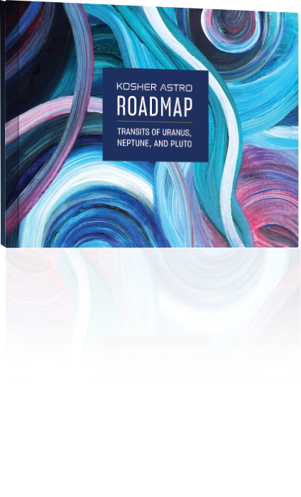
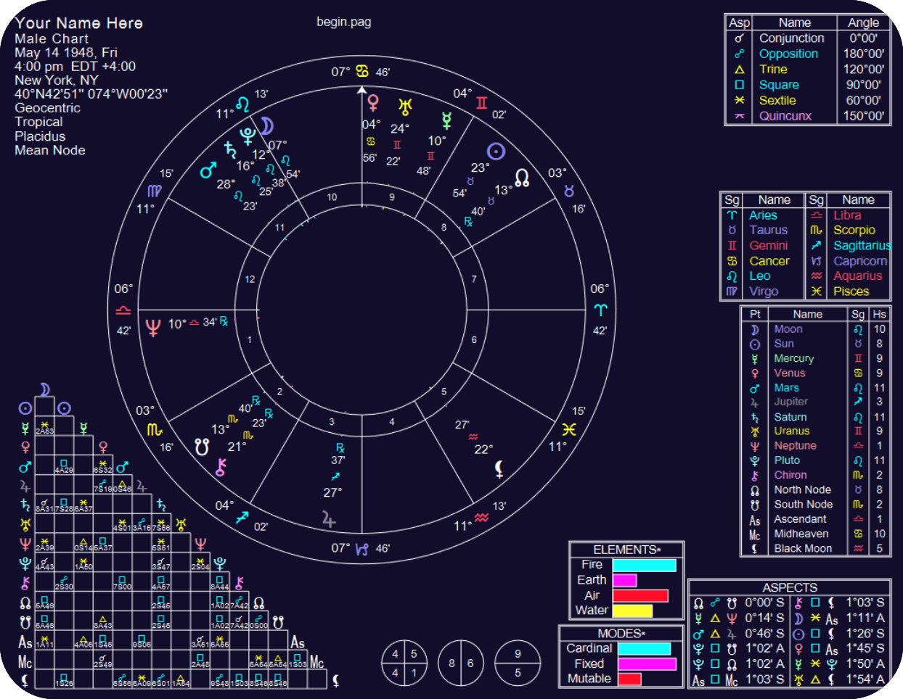

About the Author
Hi, I’m Yitzchok Aharon Pinkesz and its my pleasure to assist you on your journey into the world of kosher astrology. I have been working with the Torah-based method of astrology for over 15 years, and I am still amazed to see what a powerful impact it can make in people’s lives. If you have any questions, feel free to reach out to me at KosherAstro@gmail.com
View More


Kosher Astrology
A Jewish Guide to Celestial Wisdom
A Jewish Guide to Celestial Wisdom
- A comprehensive guide to astrology from a Jewish and Torah-Observant perspective.
- This groundbreaking book demonstrates how astrology is a fully accepted belief in Judaism.
- It also showcases how astrological charts can provide profound insight into your personality, relationships, and major life developments.
- Its nearly 500 pages include 75 pages of full-color illustrations.
Roadmaps
Personalized books about your life
Personalized books about your life
- These beautifully designed, hardcover, full-color, infographic books are custom-made for you.
- They contain the exact time periods of your life’s greatest challenges, events, and transformations.
- Roadmaps provide the specific dates, throughout your lifetime, that are astrologically the most significant times for change and growth. Potentially, they can be the greatest life-changing and monumental growth periods of your life!
- Roadmaps can provide insight into why major events are transpiring, how long they will last, and how it can help you become your best and highest self.


Chart Reading
A one-on-one session exploring the blueprints of your life
- These beautifully designed, hardcover, full-color, infographic books are custom-made for you.
- They contain the exact time periods of your life’s greatest challenges, events, and transformations.
- Roadmaps provide the specific dates, throughout your lifetime, that are astrologically the most significant times for change and growth. Potentially, they can be the greatest life-changing and monumental growth periods of your life!
- Roadmaps can provide insight into why major events are transpiring, how long they will last, and how it can help you become your best and highest self.